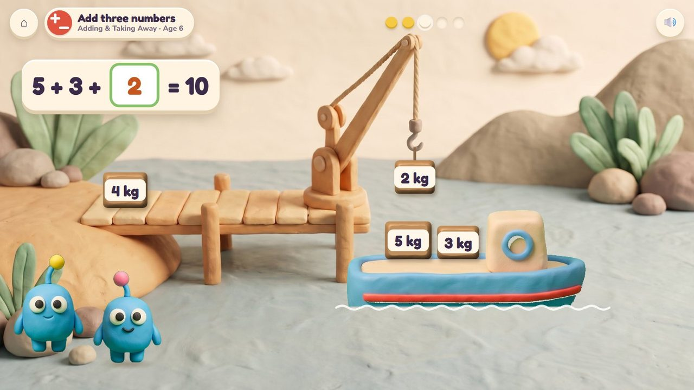
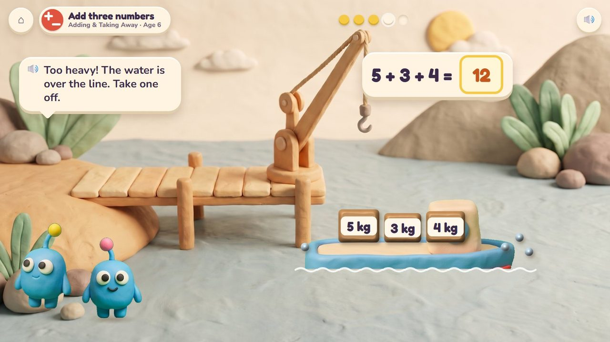
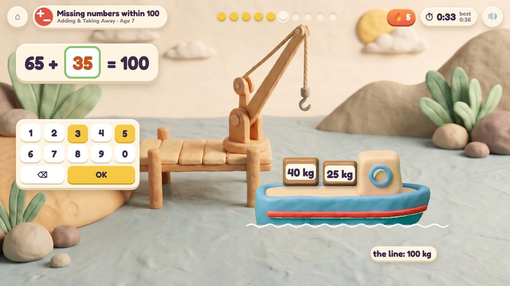
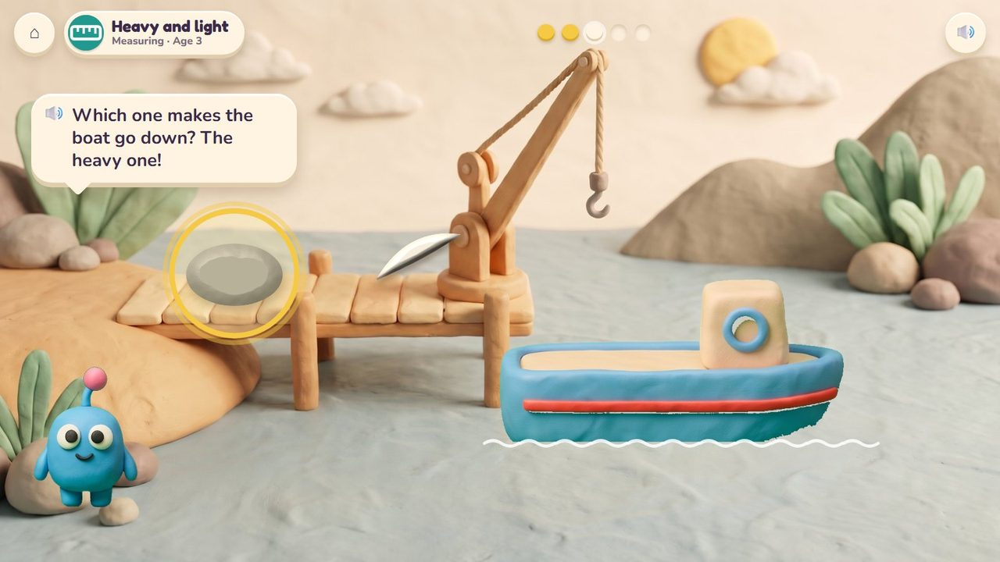

Boat Load
Load the twins' boat right to its line: too heavy, and the water comes over.
9 lessons (7 taught here first, the rest practised here) in 2 topics:
Adding & Taking AwayMeasuring

The game
Bim and Bam's cargo boat has a coral line on its side. The crane lifts crates on board and the boat sinks a little lower with each one: when the water reaches the line exactly, it is full and sails. The youngest compare heavy and light (a rock or a feather?); older ones add the crates' kilograms to make exactly 10 or 100. One crate too many and the line goes under the water: take it off again.
Hands-on
Tap a crate to lift it on with the crane; tap it again to take it off.
The end of a round
Right on the line: the boat toots and sails away.
How it plays
A storyboard of the game in one lesson, drawn from the app's own clay pictures.
1Load to the line
Add three numbers, age 6: ten kilograms fills her to the line.
🔊 “Ten kilograms fills her right to the line!”

2Lower and lower
5 + 3 on board: the crane brings 2 more.

3Too heavy
5 + 3 + 4 = 12: the line is under the water.
🔊 “Too heavy! The water is over the line. Take one off.”

4Right on the line
5 + 3 + 2 = 10: toot toot!

5The quick round
Age 7: 65 kg on board: how much more to 100? 35. Timed.
The quick round (from age 6)
The boat has 65 kg: type how much more makes 100. Ten questions at 6-7, a 60-second round from 8; your time and your best on screen; only right answers count; a miss shows the answer and comes back later. No clock under 6.
The same game, other lessons and ages
The badge at the top left says the topic, the lesson and the age.

6Heavy and light · age 3
A rock or a feather: which one makes the boat go down?
From age 3 to 7
| Age 3Pre-school | Heavy and light; big and small. |
| Age 4Pre-K | Heavier and lighter. |
| Age 5Kindergarten | Compare weights; what can we measure? |
| Age 6Grade 1 | Add three numbers: crates of 5, 3 and 2 kg. |
| Age 7Grade 2 | Add up to four numbers; missing numbers within 100; choose the tool. |
What changes from lesson to lesson
The load
a rock or a feather at 3; crates of 1 to 5 kg at 6; tens of kilograms at 7
The line
10 kg, 20 kg, then 100 kg
Help
the boat sinks with each crate, so you see how close you are
How you answer
tapping crates; the number pad for the quick round
Its 9 lessons
Age by age they are on the full list; here grouped by topic (the first activity named teaches a lesson, the others practise it).
Adding & Taking Away 3
- Add three numbers
1.OA.2Boat Load · Marble Run - Add up to four numbers
2.NBT.6Boat Load · Marble Run · Treasure Shop - Missing numbers within 100
2.OA.1Boat Load · Seesaw Twins · Volcano Pop
Measuring 6
- Big and small
early yearsCritter Maker · Boat Load - Heavy and light
early yearsBoat Load · Seesaw Twins - Heavier and lighter
early yearsBoat Load · Seesaw Twins - What can we measure?
K.MD.1Boat Load · Seesaw Twins · Kart Cup - Compare weights
K.MD.2Boat Load · Seesaw Twins - Choose the tool
2.MD.1Kart Cup · Boat Load
Questions
- Kilograms on the crates, or no units for the youngest?
- Anything in the storyboard to change (say the frame number)?